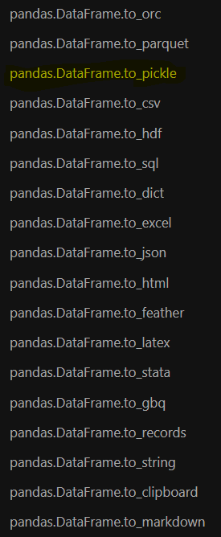

import pandas as pd4 Getting Data With Pandas
Pandas!
4.1 Introduction to Pandas
Pandas is one of the most widely-used Python libraries for statistics, and excels at processing tabular data. If you have ever had any experience with R, it is modeled extensively on the dataframes used there. In this section we aim to learn about the fundamental objects used in pandas, bring our own data into these objects, and then view basic information about it.
Did You Know?
Did you know that the pandas library package is aptly named? It is a portmanteau of the words panel and data. We are literally viewing panels of data!
First, we need to make sure that we import the library into Python so we can use it:
Objects in pandas are typically two-dimensional tables called dataframes. You can think of this as being similar to a single spreadsheet in excel. Each column (called series) in the dataframe can have a name, as well as an indexing value.
A pandas dataframe
We can create both single series in pandas or full dataframes. Let’s consider a single series first. We can create this using the pandas Series method, as well as a list of elements we wish to include in our series.
series_x = pd.Series([1, 2, 3])
series_x0 1
1 2
2 3
dtype: int64When this displays in python, we see 2 columns. The left column is always the index, while the right column contains the data values. The series is also given a dtype. This is similar to the datatypes we considered previously, and tells us what type of data is held inside the series. When a series is first created, pandas will try to guess the dtype for the series based on the individual elements inside it. We can make a series made of float numbers:
series_y = pd.Series([1, 2.0, 3.14])
series_y0 1.00
1 2.00
2 3.14
dtype: float64Notice that here, the first element was actually converted from an int to a float by the program! This will often happen when working with int and float type objects.
Next, a series of str elements will default to the dtype of object.
series_z = pd.Series(['settlers', 'of', 'catan'])
series_z0 settlers
1 of
2 catan
dtype: objectThe dtype: object is pandas ‘catchall’ Series type, and we want to be cautious when we see this! It is also the Series dtype used when we have mixed data:
series_mixed = pd.Series([1, 1.0, 'one'])
series_mixed0 1
1 1.0
2 one
dtype: objectWhen pandas sees data that cannot be obviously converted into a single datatype, it leaves each individual entry alone, as whatever its original datatype happened to be. Be careful when you see this! Many operations on pandas dataframes apply to the entire column (similar to how a new excel column is often created with a function that applies to a previous column). If this operation is built to only work on a single datatype, we might run into errors! To avoid this, we can utilize the .astype() methods. Possible arguments for astype() include the standard datatypes:
intfloatstrbool
However if you need to be more specific, you can be as well. These arguments are all required to be included in quotations, as they refer to aliases for pandas specific datatypes:
'Int8','Int32','Int64'provide nullable integer types (note the capital I! more on nullable typing below)'string'provides access to a series that will be string specific, instead of the generalobjectstype. Pandas recommends using this type for strings whenever possible.
display(series_y)
display(series_y.astype(int))
display(series_y.astype(bool))
display(series_y.astype(str))
display(series_y.astype('string'))0 1.00
1 2.00
2 3.14
dtype: float640 1
1 2
2 3
dtype: int640 True
1 True
2 True
dtype: bool0 1.0
1 2.0
2 3.14
dtype: object0 1.0
1 2.0
2 3.14
dtype: stringYou will have noticed that each of these series has an index associated with it. We can access series indicies using the index attribute:
series_a = pd.Series([2, 4, 6])
display(series_a)
display(series_a.index)0 2
1 4
2 6
dtype: int64RangeIndex(start=0, stop=3, step=1)When an index is first assigned to a series, it is automatically assigned as an integer index, with similar properties to a list index (starts at 0, can be sliced, etc.). However we can change this index to be whatever we want by directly modifying the index attribute:
series_a.index = ['a', 'b', 'c']
display(series_a.index)
display(series_a)Index(['a', 'b', 'c'], dtype='object')a 2
b 4
c 6
dtype: int64A useful feature in pandas is the ability to reindex the dataset. Reindexing a dataset will do two things:
- Reorder the data according to the order we ask for.
- Add new rows for indicies that are missing in the original dataset but are included in our new index.
One popular use for this method is in filling out a timeseries dataset: if there were missing years in a dataset but we do not wish to simply skip over them, we can add the extra years to the index.
series_a = series_a.reindex(['d', 'c', 'b', 'a'])
display(series_a.index)
display(series_a)Index(['d', 'c', 'b', 'a'], dtype='object')d NaN
c 6.0
b 4.0
a 2.0
dtype: float64
Beware NaN values!
Sometimes in our datasets, we want to allow a row to contain missing, or null values. The default null value for pandas is NaN. In python, NaN is considered a float value. In the above example, we introduced a missing value for the new ‘d’ index, which defaults to the NaN float value. Because its type is float, this converted our entire series to float as well. If we wish to keep the series as an int, we can coerce it back using the astype() method with one of the nullable integer types. This will introduce a slightly different looking null value that works for integers!
series_a.astype('Int64')d <NA>
c 6
b 4
a 2
dtype: Int64We commonly want to make new series out of old ones inside our dataframes. Operations are typically done on an element by element basis. We will see many examples of these in future sessions as we learn to manipulate dataframes, but here is a short example of what we may wish to do:
series_a = pd.Series([2, 4, 6])
series_b = pd.Series([1, 2, 3])
display(series_a + series_b)
display(series_a > 3)
display(series_a*5)0 3
1 6
2 9
dtype: int640 False
1 True
2 True
dtype: bool0 10
1 20
2 30
dtype: int644.2 Bringing in our own data
Enough about series. Let’s talk dataframes! This is the main tool in our pandas toolkit. As we showed earlier, it is simply a collection of series all stacked together like an excel spreadsheet. There are many different ways to create a dataframe including:
- Within python itself
- From a csv, excel file, or some other local tabular format
- From more exotic data sources, such as a parquet file, json, or a website
- From a SQL database
For the purposes of this course, we are going to focus on opening up local datafiles (with the most common type being a csv or excel file), and then utilizing the data once it is in python. To bring in data from a csv or excel file, we utilize the pandas methods read_csv() or read_excel(), with the only required argument being the path to the datafile.
But first we need some data! Navigate to this URL, right click on the data, and save the csv as gapfinder.csv in a folder called data inside our project folder. Now that we have a dataset, let’s load it into pandas.
The Data Folder
While everyone may organize their projects and folders slightly differently, there are some general principles to adhere to that make project management easier. Arguably the most important of these is to treat input data as read only. If you have an excel spreadsheet, it is tempting to go make changes to the data directly in the spreadsheet: I’ll just tweak a single value here, or add a column there. However, once we start doing this we lose the concept of reproducibility! How did we get certain values if the changes are all hidden in the excel spreadsheet? By keeping data as read only and making all of our changes in the python scripts, the processing is not only reproducible but also transparent to others.
Because of this, it is common to have a folder exclusively for raw data. Secondary folders may then be set-up for ‘cleaned’ data, python scripts, analysis outputs and more.
df = pd.read_csv('../data/gapfinder.csv')
df| country | year | pop | continent | lifeExp | gdpPercap | |
|---|---|---|---|---|---|---|
| 0 | Afghanistan | 1952 | 8425333.0 | Asia | 28.801 | 779.445314 |
| 1 | Afghanistan | 1957 | 9240934.0 | Asia | 30.332 | 820.853030 |
| 2 | Afghanistan | 1962 | 10267083.0 | Asia | 31.997 | 853.100710 |
| 3 | Afghanistan | 1967 | 11537966.0 | Asia | 34.020 | 836.197138 |
| 4 | Afghanistan | 1972 | 13079460.0 | Asia | 36.088 | 739.981106 |
| ... | ... | ... | ... | ... | ... | ... |
| 1699 | Zimbabwe | 1987 | 9216418.0 | Africa | 62.351 | 706.157306 |
| 1700 | Zimbabwe | 1992 | 10704340.0 | Africa | 60.377 | 693.420786 |
| 1701 | Zimbabwe | 1997 | 11404948.0 | Africa | 46.809 | 792.449960 |
| 1702 | Zimbabwe | 2002 | 11926563.0 | Africa | 39.989 | 672.038623 |
| 1703 | Zimbabwe | 2007 | 12311143.0 | Africa | 43.487 | 469.709298 |
1704 rows × 6 columns
.. ?
The .. used in the above path tells python to look in the directory directly above the one you are currently in - the one where your notebook is saved.
As an example, my directory structure looks like:
/ds_intro_to_python
│
└───/introduction_to_python
│ │ hello_world.ipynb
│ │ hello_world.py
│
└───/introduction_to_pandas
│ │ intro_to_pandas.ipynb <------ (THIS FILE!)
│
└───/data
│ │ gapfinder.csv <--------------- (The file we want access to!)This file is in a different subfolder relative to the csv, so we first ‘back out’ of this folder using .., and then ‘enter’ the data folder using a regular file path. This is called relative pathing and can be useful for accessing data within a single project that will always be in the same spot!
This dataset has 6 columns, 1704 rows, and a mixture of different datatypes. Just like we were able to access the index of a series, we can do the same with a dataframe. Now, we can also access (and change if need be!) the column names as well:
display(df.index)
display(df.columns)
df.columns = ['country', 'year', 'pop', 'continent', 'life expectancy', 'gdpPercap']
display(df.columns)RangeIndex(start=0, stop=1704, step=1)Index(['country', 'year', 'pop', 'continent', 'lifeExp', 'gdpPercap'], dtype='object')Index(['country', 'year', 'pop', 'continent', 'life expectancy', 'gdpPercap'], dtype='object')We can access each of these series individually if we want. There are two ways to access a series in a dataframe - either with square bracket indexing, or treating the column name as an attribute:
display(df['country'])
display(df.country)0 Afghanistan
1 Afghanistan
2 Afghanistan
3 Afghanistan
4 Afghanistan
...
1699 Zimbabwe
1700 Zimbabwe
1701 Zimbabwe
1702 Zimbabwe
1703 Zimbabwe
Name: country, Length: 1704, dtype: object0 Afghanistan
1 Afghanistan
2 Afghanistan
3 Afghanistan
4 Afghanistan
...
1699 Zimbabwe
1700 Zimbabwe
1701 Zimbabwe
1702 Zimbabwe
1703 Zimbabwe
Name: country, Length: 1704, dtype: object
No Spaces!
As a general rule of thumb, we never want to include special characters such as spaces, periods, hyphens and so on in our column names, as this will alter pandas capability of calling each of the columns as an attribute. Above, you will notice we reset one of the columns to have a space in the name. If we try to access this series as an attribute now, it will fail:
df['life expectancy']0 28.801
1 30.332
2 31.997
3 34.020
4 36.088
...
1699 62.351
1700 60.377
1701 46.809
1702 39.989
1703 43.487
Name: life expectancy, Length: 1704, dtype: float64df.life expectancySyntaxError: invalid syntax (41671440.py, line 1)Try to stick to the same naming conventions for columns as for your python variables: lowercase letters, numbers (but not at the start of the name) and underscores only! (And as a matter of fact, let us change it back now):
df.columns = ['country', 'year', 'pop', 'continent', 'lifeExp', 'gdpPercap']When reading data into a dataframe from a csv (or an excel file), there are multiple optional arguments we can use to start the process of data wrangling, which is writing code to shape the data into the format we want it for our analysis. Some important options include:
header: row number to use as the column names. This allows us to skip past rows in the dataset and start from lower down if need be.index_col: name of the column we might wish to use for the index of the dataframe instead of the default integer list.usecols: list of columns we wish to use. If the dataset is large with many columns that we do not care about, we can pull in only those of interest!
Challenge 1
4.3 Learning about our data
Okay, so now we have a dataset. Great! Now what can we do with it? In the next few sessions, we will explore in detail some of the more in-depth tools that pandas gives us. For now, let’s stick to learning how to view different portions of the data, as well as learning how to describe the overall dataset.
When viewing data, we do not want to be scrolling past multiple lines of individual rows of the data. This might be a shift in mindset if you are used to working with tables of data directly in front of you! An excel spreadsheet just has all the data right there for you to look at! Why not do that here? The simple answer is magnitude. If you only have 10s to 100s of rows of data, seeing it visually is okay. But once you start to deal with thousands, millions or even trillions of rows of data, it’s going to take a while to scroll through the entire thing. At this stage, the important piece of information is how we are treating the data we see, not the actual values.
Typically, we just want to view a small slice of the data to get an understanding of the types of data we have in our dataset. We have three tools in the toolkit for this:
head(): This returns the first N rows of data (default N = 5)tail(): This returns the last N rows of data (default N = 5)sample(): This returns a random sampling of N rows of data (default N = 1)
print('The first 5 rows of data:')
display(df.head())
print('The last 3 rows of data:')
display(df.tail(3))
print('A random sampling of 7 rows of data:')
display(df.sample(7))The first 5 rows of data:| country | year | pop | continent | lifeExp | gdpPercap | |
|---|---|---|---|---|---|---|
| 0 | Afghanistan | 1952 | 8425333.0 | Asia | 28.801 | 779.445314 |
| 1 | Afghanistan | 1957 | 9240934.0 | Asia | 30.332 | 820.853030 |
| 2 | Afghanistan | 1962 | 10267083.0 | Asia | 31.997 | 853.100710 |
| 3 | Afghanistan | 1967 | 11537966.0 | Asia | 34.020 | 836.197138 |
| 4 | Afghanistan | 1972 | 13079460.0 | Asia | 36.088 | 739.981106 |
The last 3 rows of data:| country | year | pop | continent | lifeExp | gdpPercap | |
|---|---|---|---|---|---|---|
| 1701 | Zimbabwe | 1997 | 11404948.0 | Africa | 46.809 | 792.449960 |
| 1702 | Zimbabwe | 2002 | 11926563.0 | Africa | 39.989 | 672.038623 |
| 1703 | Zimbabwe | 2007 | 12311143.0 | Africa | 43.487 | 469.709298 |
A random sampling of 7 rows of data:| country | year | pop | continent | lifeExp | gdpPercap | |
|---|---|---|---|---|---|---|
| 989 | Mexico | 1977 | 63759976.0 | Americas | 65.032 | 7674.929108 |
| 63 | Australia | 1967 | 11872264.0 | Oceania | 71.100 | 14526.124650 |
| 798 | Japan | 1982 | 118454974.0 | Asia | 77.110 | 19384.105710 |
| 287 | Chile | 2007 | 16284741.0 | Americas | 78.553 | 13171.638850 |
| 58 | Argentina | 2002 | 38331121.0 | Americas | 74.340 | 8797.640716 |
| 1369 | Slovak Republic | 1957 | 3844277.0 | Europe | 67.450 | 6093.262980 |
| 1009 | Montenegro | 1957 | 442829.0 | Europe | 61.448 | 3682.259903 |
Once we have looked at the data, and it seems to look normal at first glance, we can ask some basic questions about the dataset. How many columns are there? How many rows? Are there null values in any of our columns? What about some basic statistics??
Luckily for us, pandas has done all of the hard work here. Two valuable methods built into pandas will give us basic information about the overall dataset: .info() and .describe().
.info() will gives us basic information about each column: what data type it is storing and how many non-null values are in the column.
df.info()<class 'pandas.core.frame.DataFrame'>
RangeIndex: 1704 entries, 0 to 1703
Data columns (total 6 columns):
# Column Non-Null Count Dtype
--- ------ -------------- -----
0 country 1704 non-null object
1 year 1704 non-null int64
2 pop 1704 non-null float64
3 continent 1704 non-null object
4 lifeExp 1704 non-null float64
5 gdpPercap 1704 non-null float64
dtypes: float64(3), int64(1), object(2)
memory usage: 80.0+ KB.describe() will give us basic statistical information about every numerical column: mean, standard deviation, quartiles, and counts are all included with a call to a single method!
df.describe()| year | pop | lifeExp | gdpPercap | |
|---|---|---|---|---|
| count | 1704.00000 | 1.704000e+03 | 1704.000000 | 1704.000000 |
| mean | 1979.50000 | 2.960121e+07 | 59.474439 | 7215.327081 |
| std | 17.26533 | 1.061579e+08 | 12.917107 | 9857.454543 |
| min | 1952.00000 | 6.001100e+04 | 23.599000 | 241.165876 |
| 25% | 1965.75000 | 2.793664e+06 | 48.198000 | 1202.060309 |
| 50% | 1979.50000 | 7.023596e+06 | 60.712500 | 3531.846988 |
| 75% | 1993.25000 | 1.958522e+07 | 70.845500 | 9325.462346 |
| max | 2007.00000 | 1.318683e+09 | 82.603000 | 113523.132900 |
Finally, if we want basic information about the non-numerical columns, we can use the value_counts() method. For a given series (or multiple series), this tells us how freqeuntly a given value appears. We will learn more about what this is doing under the hood when we learning about aggregation methods in a later section, but we can apply it to singular text columns here as a teaser
df.country.value_counts()Afghanistan 12
Pakistan 12
New Zealand 12
Nicaragua 12
Niger 12
..
Eritrea 12
Equatorial Guinea 12
El Salvador 12
Egypt 12
Zimbabwe 12
Name: country, Length: 142, dtype: int64Challenge 2
4.4 Saving our data


What do we do once we have cleaned up our data or produced some analysis? It is very likely that we will want to save that clean dataset or analysis to a new file. Pandas to the rescue! As simple as it is to read in data via read_csv() or read_excel(), we can export it back out. While I’ve shown the entire list of to_file() options available in pandas (it’s extensive!), we will focus on to_csv(). Required arguments to this method are:
path_or_buf- full path/filename where you wish to save this file
That’s it! However, there are some useful optional arguments as well:
index: True or False. Whether we wish to include the index in our output (default is True). We will often want to set this to False, as the index is just a set of integers labeling the row numbers.columns: list of columns to keep in the output
pd.method() or df.method()?
Sometimes, in order to access a function, we directly access it via the library (pd), or we access it as a method of the dataframe we are using (df). It can be hard to keep track of which functions live where. As a general rule of thumb, if the method is being used to do something to a specific dataframe, it probably belongs to the dataframe object (which is, let’s be honest, most of the functions we might use). Don’t be afraid to use all of your resources to keep it straight! (Yes, google counts as a valid resource). Using the help function is also a quick and easy way to check where a method lives.
For example, to find the to_csv() function, we can see that it belongs to the dataframe by checking help(df.to_csv). However, trying to use pd.to_csv will throw an error - a good hint that it was a dataframe method all along!
help(pd.to_csv)AttributeError: module 'pandas' has no attribute 'to_csv'Inversely, the read_csv function belongs directly to pandas, and so trying something like this will break:
help(df.read_csv)AttributeError: 'DataFrame' object has no attribute 'read_csv'Challenge 3
Up next, we will learn how to clean our data.